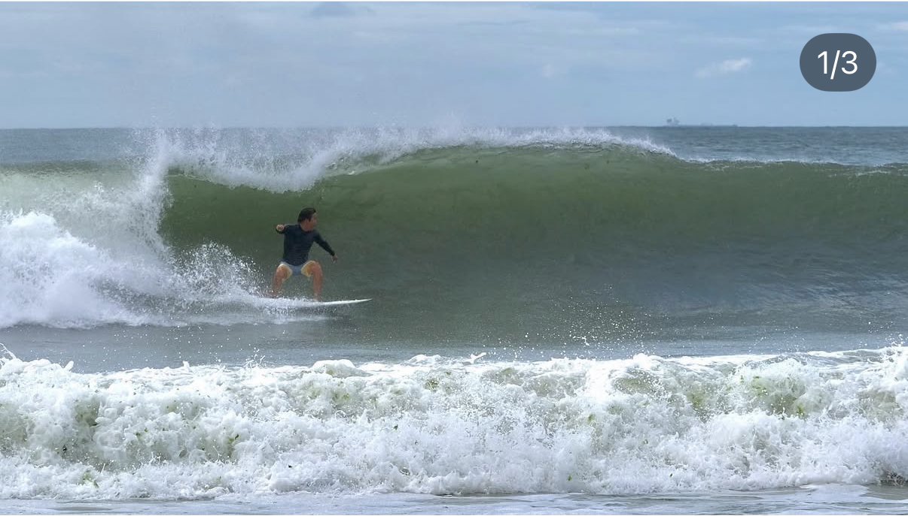
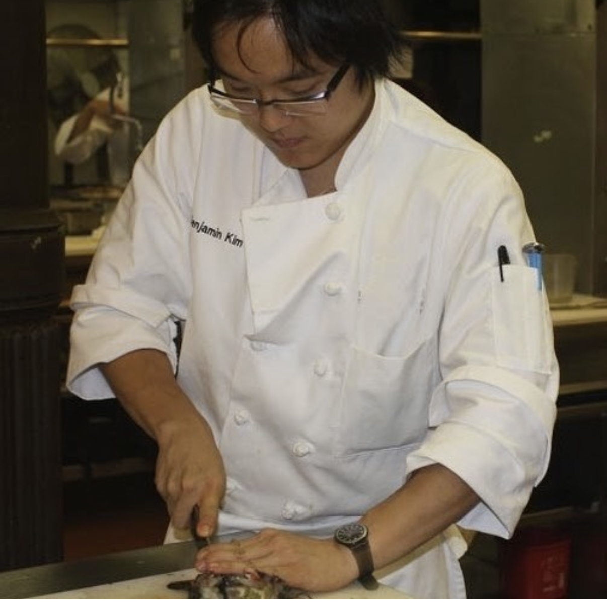

Launched and led product design for Soventure’s travel-insurance marketplace, simplifying complex coverage decisions; user research showed greater confidence when selecting a policy.
Explore the projectSenior Product Designer
Complicated products.
Considered design.
I design products for people with a fair amount to figure out: which expert to call, which policy to choose, what medication a patient is taking. My work spans healthcare, finance, research, and insurance. I bring extensive startup experience, taking products from 0→1.
↓Healthcare & Life SciencesFinance & InsuranceB2B & Consumer ProductsStartup ExperienceSole Designer
20+ hospital systems
Medication management
Cureatr
21M patients
Patient-feedback platform
Quality Reviews
7,500+ candidates/year
Expert-screening workflow
FirstThought
Launched Soventure
Adventure travel-insurance marketplace
Soventure
Selected work
01 — 03As FirstThought’s co-founder and sole designer, I led the 0→1 design of an expert-research platform that transformed fragmented scientific data into actionable workflows, reducing research time from days to hours for a 25-person analyst team.
Explore the project
As lead UX designer, I simplified fragmented medication data into a mobile history clinicians could quickly interpret at the point of care. Validated with hospital staff across New York, the product was deployed across 20+ hospital systems nationwide.
Explore the projectEarlier work
Design leadership across
complex products.
Quality Reviews 2014–2015 Founding Employee, Head of Product Design, Product Consultant (2021–2024)
Joined as the first employee; designed the patient-facing survey tool and provider analytics dashboard for real-time patient feedback.
Helped recruit the first CTO/developer, supported fundraising and early product strategy, and traveled to hospitals to demo the product and support sales. Helped scale the product to 21M patients and 10 of the top 35 U.S. healthcare providers.
Axial 2011–2014 Lead Product Designer & Product Development
Led UX and visual design for a middle-market capital-raising platform and managed the design/front-end relationship across a five-person team.
GLG 2008–2011 Senior UX/UI Designer
Designed an expert-network platform, used performance metrics to drive iterations, and managed and trained two junior designers.
My experience designing expert-network products at GLG laid the groundwork for helping start FirstThought and building its ML-powered research platform.
About me
I also surf, snow, cook

